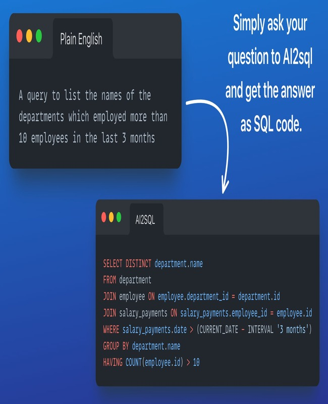

Developed a robust hand gesture recognitionsystem using computer vision techniques forintuitive human-computer interaction.

Text to SQL
The Text-to-SQL project utilizing a simple T5 model involves the application of natural language processing (NLP) techniques to bridge the gap between human-readable text and structured SQL queries.
PHI Masking
The PHI (Protected Health Information) masking project utilizing a BERT model involves the development of a natural language processing (NLP) solution to safeguard sensitive medical information contained within textual data.